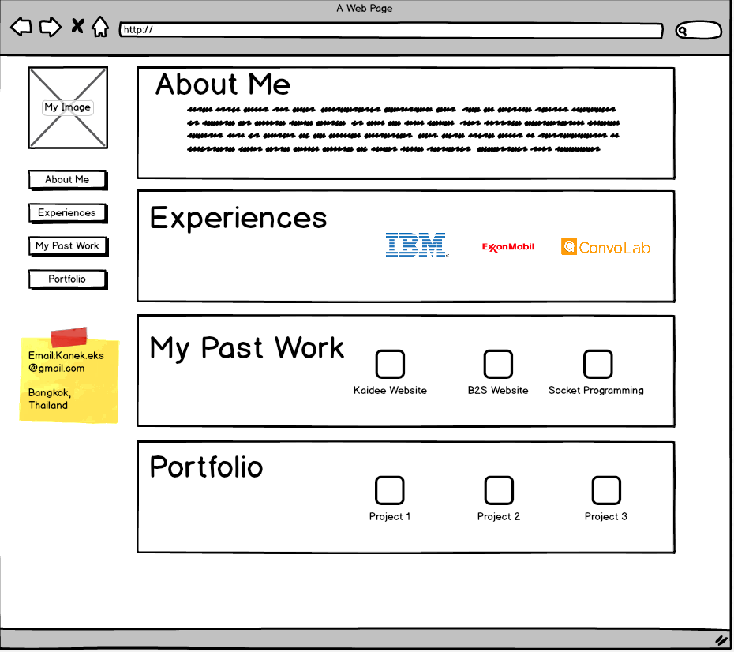
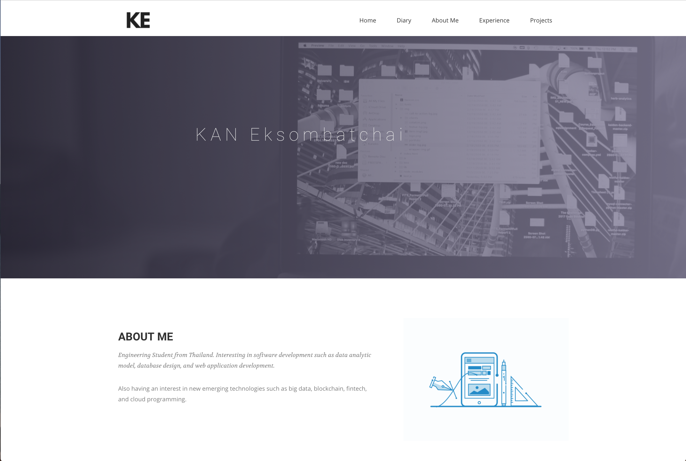
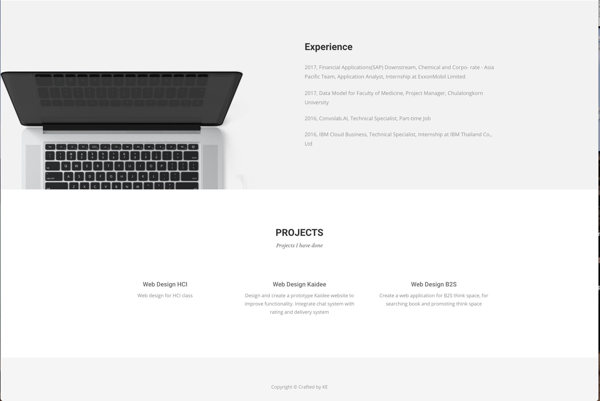

This is record of the web application design project. The purposes of the website are introduce myself to the one who want to know more about me. Tools I'm using in this web application are HTML, java script, bootstrap, CSS. For the backend I'm using Node js you can see the source file in test.js in github.

The First design is using one page UI and the navigation bar at the left of the page. And each section of the detail separate by the square box.

So in the final design I choose to use the grey scale color in the web application to make it easy to read for the reader and also it give a professional look to the website. Also I'm using onepage design to make the web app simple and easy to use by the user.

In the web app I'm also using the Gestalt theory to separate each content by background photo and color background. Also I move the Navigation bar from left side to the top to make the one page design can insert more detail of each section.